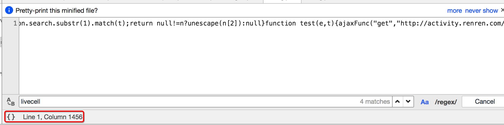
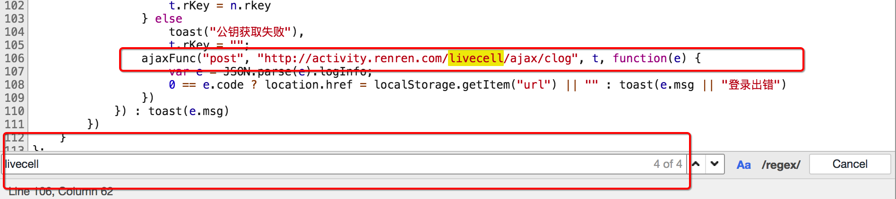

<!DOCTYPE html>
<html lang="zh-CN">
<head><meta name="generator" content="Hexo 3.9.0">
  <meta charset="utf-8">
  <meta content="width=device-width, initial-scale=1.0, maximum-scale=1.0, user-scalable=0" name="viewport">
  
  <title itemprop="name">js的逆向学习 | lovelves</title>
  
    <link rel="shortcut icon" href="/images/favicon.ico">
  
  <meta http-equiv="x-dns-prefetch-control" content="on">
  <link rel="stylesheet" href="https://fonts.googleapis.com/css?family=Noto+SerifMerriweather|Merriweather+Sans|Source+Code+Pro|Ubuntu:400,700|Noto+Serif+SC" media="all">
  <link rel="dns-prefetch" href="//cdn.jsdelivr.net">
  <link rel="stylesheet" id="saukra_css-css" href="/css/style.css" type="text/css" media="all">
  <link rel="stylesheet" href="/css/lib.min.css" media="all">
  <link rel="stylesheet" href="/css/font.css" media="all">
  <link rel="stylesheet" href="/css/insight.css" media="all">
  <link rel="stylesheet" href="/css/jquery.fancybox.min.css" media="all">
  <link rel="stylesheet" href="/css/zoom.css" media="all">
  <link rel="stylesheet" type="text/css" href="/css/sharejs.css">
<!--   <link rel="stylesheet" id="saukra_css-css" href="https://2heng.xin/wp-content/cache/autoptimize/css/autoptimize_ad42a61f4c7d4bdd9f91afcff6b5dda5.css
" type="text/css" media="all"> -->
  <script src="https://cdn.jsdelivr.net/npm/jquery/dist/jquery.min.js"></script>
  <script type="text/javascript" src="/live2d-widget/a.js"></script>
  <script src="/live2d-widget/autoload.js"></script>
   <link rel="stylesheet" href="https://cdn.jsdelivr.net/npm/font-awesome/css/font-awesome.min.css">
  <script>
  /*Initial Variables*/
  var mashiro_option = new Object();
  var mashiro_global = new Object();
  mashiro_option.NProgressON = true;
  /* 
   * 邮箱信息之类的东西可以填在这里，这些js变量基本都作用于sakura-app.js
   * 这样的设置仅是为了方便在基于PHP开发的主题中设置js变量，既然移植到了Node上，我想或许可以精简这一逻辑吧
   */
  mashiro_option.email_domain = "";
  mashiro_option.email_name = "";
  mashiro_option.cookie_version_control = "";
  mashiro_option.qzone_autocomplete = false;
  mashiro_option.site_name = "lovelves的博客";
  mashiro_option.author_name = "的博客";
  mashiro_option.site_url = "www.lovelves.cn";
  mashiro_option.v_appId = "eBIOWlNSti1cF7QQKTdnAMF5-gzGzoHsz";
  mashiro_option.v_appKey = "vWB0QiSYnTUHzNWujmBXrXBF";
  mashiro_option.mathjax = "1";
  mashiro_option.qq_api_url = "https://api.mashiro.top/qqinfo/"; 
  mashiro_option.qq_avatar_api_url = "https://api.mashiro.top/qqinfo/";

  // mashiro_option.jsdelivr_css_src = "https://cdn.jsdelivr.net/gh/moezx/cdn@3.4.5/css/lib.min.css";
  // mashiro_option.float_player_on = true;

  /*End of Initial Variables*/
  </script>
  <script type="text/javascript">
  var bg = "https://pic4.zhimg.com/v2-7e3bd74fc2385af3251553adceec67a8_r.jpg?source=1940ef5c,https://pic4.zhimg.com/v2-23fe50c0f5c916a8a319e5afdec5b044_r.jpg?source=1940ef5c,https://pic4.zhimg.com/v2-ee4e5d2641987212a1b874fc492fc55c_r.jpg?source=1940ef5c,https://cdn.jsdelivr.net/gh/lingdas/note/img/16.jpg,https://cdn.jsdelivr.net/gh/lingdas/note/img/13.jpg,https://cdn.jsdelivr.net/gh/lingdas/note/img/10.jpg,https://cdn.jsdelivr.net/gh/lingdas/note/img/20.jpg".split(",");
  var bgindex = Math.floor(Math.random()*bg.length);
  if (!!window.ActiveXObject || "ActiveXObject" in window) { //is IE?
    alert('朋友，IE浏览器未适配哦~');
  }
  </script>
  <style type="text/css">
  .hljs-ln{border-collapse:collapse}.hljs-ln td{padding:0}.hljs-ln-n:before{content:attr(data-line-number)}
  </style>
  <style type="text/css">.site-top .lower nav{display:block !important;}.author-profile i,.post-like a,.post-share .show-share,.sub-text,.we-info a,span.sitename,.post-more i:hover,#pagination a:hover,.post-content a:hover,.float-content i:hover{color:#FE9600}.feature i,.download,.navigator i:hover,.links ul li:before,.ar-time i,span.ar-circle,.object,.comment .comment-reply-link,.siren-checkbox-radio:checked + .siren-checkbox-radioInput:after{background:#FE9600}::-webkit-scrollbar-thumb{background:#FE9600}.download,.navigator i:hover,.link-title,.links ul li:hover,#pagination a:hover,.comment-respond input[type='submit']:hover{border-color:#FE9600}.entry-content a:hover,.site-info a:hover,.comment h4 a,#comments-navi a.prev,#comments-navi a.next,.comment h4 a:hover,.site-top ul li a:hover,.entry-title a:hover,#archives-temp h3,span.page-numbers.current,.sorry li a:hover,.site-title a:hover,i.iconfont.js-toggle-search.iconsearch:hover,.comment-respond input[type='submit']:hover{color:#FE9600}.comments .comments-main{display:block !important;}.comments .comments-hidden{display:none !important;}background-position:center center;background-attachment:inherit;}
  </style>
</head>
</html>
<body class="page-template page-template-user page-template-page-analytics page-template-userpage-analytics-php page page-id-1297 chinese-font serif isWebKit">
  <div class="scrollbar" id="bar">
  </div>
  <a href="#" class="cd-top faa-float animated"></a>
  <section id="main-container">
    <div class="headertop ">
  <div id="banner_wave_1"></div>
  <div id="banner_wave_2"></div>
  <figure id="centerbg" class="centerbg">
    <div class="focusinfo no-select">
      <div class="header-tou">
        <a href="www.lovelves.cn">
          
        </a>
      </div>
      <div class="header-info">
        <p>Live your life with passion! With some drive!</p>
        <div class="top-social_v2">
          <li id="bg-pre">
            
          </li>
          
          <li id="bg-next">
            
          </li>
        </div>
      </div>
    </div>
  </figure>
  <div id="video-container" style="">
    <video style="object-fit: fill" id="bgvideo" class="video" video-name="" src="" width="auto" preload="auto">
    </video>
    <div id="video-btn" class="loadvideo videolive">
    </div>
    <div id="video-add">
    </div>
    <div class="video-stu">
    </div>
  </div>
  <div class="headertop-down faa-float animated" onclick="headertop_down()">
    <span>
      <i class="fa fa-chevron-down" aria-hidden="true">
      </i>
    </span>
  </div>
</div>
    <div id="page" class="site wrapper">
      <header class="site-header no-select gizle sabit" role="banner">
  <div class="site-top">
    <div class="site-branding">
      <span class="site-title">
        <span class="logolink moe-mashiro">
          <a href="/">
            <span class="sakurasono">lovelves</span>
            <span class="shironeko">的博客</span>
          </a>
        </span>
      </span>
    </div>
    <div class="searchbox search-form-submit">
      <i class="iconfont js-toggle-search iconsearch icon-search">
      </i>
    </div>
    <div id="show-nav" class="showNav mobile-fit">
      <div class="line line1">
      </div>
      <div class="line line2">
      </div>
      <div class="line line3">
      </div>
    </div>
    <div class="lower-cantiner">
      <div class="lower">
        <nav class="mobile-fit-control hide">
          <ul id="menu-new" class="menu">
            
              <li>
                <a href="/">
                  <span class="faa-parent animated-hover">
                    <i class="fa  fa-fort-awesome faa-shake" aria-hidden="true"></i>
                    首页
                  </span>
                </a>
                
              </li>
            
              <li>
                <a href="/archives">
                  <span class="faa-parent animated-hover">
                    <i class="fa  fa-archive faa-shake" aria-hidden="true"></i>
                    归档
                  </span>
                </a>
                
                  <ul class="sub-menu">
                    
                      <li>
                        <a href="/categories/技术/">
                          <i class="fa fa-code" aria-hidden="true"></i>
                          技术
                        </a>
                      </li>
                    
                  </ul>
                
              </li>
            
              <li>
                <a href="javascript:;">
                  <span class="faa-parent animated-hover">
                    <i class="fa  fa-list-ul faa-vertical" aria-hidden="true"></i>
                    清单
                  </span>
                </a>
                
                  <ul class="sub-menu">
                    
                      <li>
                        <a href="/booklist/">
                          <i class="fa fa-th-list faa-bounce" aria-hidden="true"></i>
                          笔记
                        </a>
                      </li>
                    
                      <li>
                        <a href="/bangumi/">
                          <i class="fa fa-film faa-vertical" aria-hidden="true"></i>
                          番组
                        </a>
                      </li>
                    
                  </ul>
                
              </li>
            
              <li>
                <a href="/">
                  <span class="faa-parent animated-hover">
                    <i class="fa  fa-leaf faa-wrench" aria-hidden="true"></i>
                    关于
                  </span>
                </a>
                
                  <ul class="sub-menu">
                    
                      <li>
                        <a href="/about/">
                          <i class="fa fa-meetup" aria-hidden="true"></i>
                          我？
                        </a>
                      </li>
                    
                  </ul>
                
              </li>
            
              <li>
                <a href="/atom.xml">
                  <span class="faa-parent animated-hover">
                    <i class="fa  fa-rss faa-pulse" aria-hidden="true"></i>
                    RSS
                  </span>
                </a>
                
              </li>
            
          </ul>
        </nav>
      </div>
    </div>
  </div>
</header>

      <link rel="stylesheet" type="text/css" href="/css/sharejs.css">
<link rel="stylesheet" href="https://cdnjs.cloudflare.com/ajax/libs/tocbot/4.4.2/tocbot.css">
<div class="pattern-center-blank"></div>

  <div class="pattern-center single-center">
    <!-- 有配图默认渲染第一张 -->
    <div class="pattern-attachment-img lazyload" style="background-image: url(https://cdn.jsdelivr.net/gh/lingdas/note/img/17.jpg);" src="https://cdn.jsdelivr.net/gh/honjun/cdn@1.6/img/loader/orange.progress-bar-stripe-loader.svg" data-src="https://cdn.jsdelivr.net/gh/lingdas/note/img/17.jpg">
    </div>
    <header class="pattern-header single-header">
      <h1 class="entry-title">
      js的逆向学习</h1>
      <p class="entry-census">
        <span>
          <a href="">
            
          </a>
        </span>
        <span>
          <a href="">lovelves</a>
        </span>
        <span class="bull">
        ·</span>
        2021-6-21<span class="bull">
        ·</span>
      <span id="busuanzi_value_page_pv"></span>次阅读</p>
    </header>
  </div>

<div id="content" class="site-content">
  <div id="primary" class="content-area">
    <main id="main" class="site-main" role="main">
      <article id="post-1" class="post-1 post type-post status-publish format-standard has-post-thumbnail hentry category-uncategorized">
        <div class="toc"></div>
        <!--<div class="toc-entry-content"><!-- 套嵌目录使用（主要为了支援评论）-->
        
        <div class="entry-content">
          <h2 id="JS的解析"><a href="#JS的解析" class="headerlink" title="JS的解析"></a>JS的解析</h2><h5 id="学习目标："><a href="#学习目标：" class="headerlink" title="学习目标："></a>学习目标：</h5><ol>
<li>了解 定位js的方法</li>
<li>了解 添加断点观察js的执行过程的方法</li>
<li>应用 js2py获取js的方法</li>
</ol>
<h3 id="1-确定js的位置"><a href="#1-确定js的位置" class="headerlink" title="1 确定js的位置"></a>1 确定js的位置</h3><blockquote>
<p>对于前面人人网的案例，我们知道了url地址中有部分参数，但是参数是如何生成的呢？</p>
</blockquote>
<p>毫无疑问，参数肯定是js生成的，那么如何获取这些参数的规律呢？通过下面的学习来了解</p>
<h5 id="1-1-观察按钮的绑定js事件"><a href="#1-1-观察按钮的绑定js事件" class="headerlink" title="1.1 观察按钮的绑定js事件"></a>1.1 观察按钮的绑定js事件</h5><p></p>
<p>通过点击按钮，然后点击<code>Event Listener</code>，部分网站可以找到绑定的事件，对应的，只需要点击即可跳转到js的位置</p>
<h5 id="1-2-通过search-all-file-来搜索"><a href="#1-2-通过search-all-file-来搜索" class="headerlink" title="1.2 通过search all file 来搜索"></a>1.2 通过search all file 来搜索</h5><p>部分网站的按钮可能并没有绑定js事件监听，那么这个时候可以通过搜索请求中的关键字来找到js的位置，比如<code>livecell</code></p>
<p></p>
<p>点击美化输出选项</p>
<p></p>
<p>可以继续在其中搜索关键字</p>
<p></p>
<h3 id="2-观察js的执行过程"><a href="#2-观察js的执行过程" class="headerlink" title="2 观察js的执行过程"></a>2 观察js的执行过程</h3><p>找到js的位置之后，我们可以来通过观察js的位置，找到js具体在如何执行，后续我们可以通过python程序来模拟js的执行，或者是使用类似<code>js2py</code>直接把js代码转化为python程序去执行</p>
<p>观察js的执行过程最简单的方式是添加断点</p>
<p></p>
<p>添加断点的方式：在左边行号点击即可添加，对应的右边BreakPoints中会出现现有的所有断点</p>
<p>添加断点之后继续点击登录，每次程序在断点位置都会停止，通过如果该行有变量产生，都会把变量的结果展示在Scoope中</p>
<p>在上图的右上角有1，2，3三个功能，分别表示：</p>
<pre><code>- 1：继续执行到下一个断点
- 2：进入调用的函数中
- 3：从调用的函数中跳出来
</code></pre><h3 id="3-js2py的使用"><a href="#3-js2py的使用" class="headerlink" title="3 js2py的使用"></a>3 js2py的使用</h3><blockquote>
<p>在知道了js如何生成我们想要的数据之后，那么接下来我们就需要使用程序获取js执行之后的结果了</p>
</blockquote>
<h5 id="3-1-js2py的介绍"><a href="#3-1-js2py的介绍" class="headerlink" title="3.1 js2py的介绍"></a>3.1 js2py的介绍</h5><p>js2py是一个js的翻译工具，也是一个通过纯python实现的js的解释器，<a href="https://github.com/PiotrDabkowski/Js2Py" target="_blank" rel="noopener">github上源码与示例</a></p>
<h5 id="3-2-js的执行思路"><a href="#3-2-js的执行思路" class="headerlink" title="3.2 js的执行思路"></a>3.2 js的执行思路</h5><p>js的执行方式大致分为两种：</p>
<ol>
<li>在了解了js内容和执行顺序之后，通过python来完成js的执行过程，得到结果</li>
<li>在了解了js内容和执行顺序之后，使用类似js2py的模块来执js代码，得到结果</li>
</ol>
<p>但是在使用python程序实现js的执行时候，需要观察的js的每一个步骤，非常麻烦，所以更多的时候我们会选择使用类似js2py的模块去执行js，接下来我们来使用js2py实现人人网登录参数的获取</p>
<h5 id="3-3-具体的实现"><a href="#3-3-具体的实现" class="headerlink" title="3.3 具体的实现"></a>3.3 具体的实现</h5><p>定位进行登录js代码</p>
<pre><code class="js">formSubmit: function() {
        var e, t = {};
        $(&quot;.login&quot;).addEventListener(&quot;click&quot;, function() {
            t.phoneNum = $(&quot;.phonenum&quot;).value,
            t.password = $(&quot;.password&quot;).value,
            e = loginValidate(t),
            t.c1 = c1 || 0,
            e.flag ? ajaxFunc(&quot;get&quot;, &quot;http://activity.renren.com/livecell/rKey&quot;, &quot;&quot;, function(e) {
                var n = JSON.parse(e).data;
                if (0 == n.code) {
                    t.password = t.password.split(&quot;&quot;).reverse().join(&quot;&quot;),
                    setMaxDigits(130);
                    var o = new RSAKeyPair(n.e,&quot;&quot;,n.n)
                      , r = encryptedString(o, t.password);
                    t.password = r,
                    t.rKey = n.rkey
                } else
                    toast(&quot;公钥获取失败&quot;),
                    t.rKey = &quot;&quot;;
                ajaxFunc(&quot;post&quot;, &quot;http://activity.renren.com/livecell/ajax/clog&quot;, t, function(e) {
                    var e = JSON.parse(e).logInfo;
                    0 == e.code ? location.href = localStorage.getItem(&quot;url&quot;) || &quot;&quot; : toast(e.msg || &quot;登录出错&quot;)
                })
            }) : toast(e.msg)
        })
    }
</code></pre>
<h5 id="从代码中我们知道"><a href="#从代码中我们知道" class="headerlink" title="从代码中我们知道:"></a>从代码中我们知道:</h5><ol>
<li>我们要登录需要对密码进行加密和获取rkey字段的值</li>
<li>rkey字段的值我们直接发送请求rkey请求就可以获得</li>
<li>密码是先反转然后使用RSA进行加密, js代码很复杂, 我们希望能通过在python中执行js来实现</li>
</ol>
<h5 id="实现思路"><a href="#实现思路" class="headerlink" title="实现思路:"></a>实现思路:</h5><ol>
<li>使用session发送rKey获取登录需要信息<ul>
<li>url: <a href="http://activity.renren.com/livecell/rKey" target="_blank" rel="noopener">http://activity.renren.com/livecell/rKey</a></li>
<li>方法: get</li>
</ul>
</li>
<li><p>根据获取信息对密码进行加密<br> 2.1 准备用户名和密码</p>
<p> 2.2 使用js2py生成js的执行环境:context</p>
<p> 2.3 拷贝使用到js文件的内容到本项目中</p>
<p> 2.4 读取js文件的内容,使用context来执行它们</p>
<p> 2.5 向context环境中添加需要数据</p>
<p> 2.6 使用context执行加密密码的js字符串</p>
<p> 2.7 通过context获取加密后密码信息</p>
</li>
<li><p>使用session发送登录请求</p>
<ul>
<li>URL: <a href="http://activity.renren.com/livecell/ajax/clog" target="_blank" rel="noopener">http://activity.renren.com/livecell/ajax/clog</a></li>
<li>请求方法: POST</li>
<li><p>数据: </p>
<pre><code>  phoneNum: xxxxxxx
  password: (加密后生产的)
  c1: 0
  rKey: rkey请求获取的
</code></pre></li>
</ul>
</li>
</ol>
<h5 id="具体代码"><a href="#具体代码" class="headerlink" title="具体代码"></a>具体代码</h5><p>需要提前下载几个js文件到本地：</p>
<blockquote>
<p>BigInt.js</p>
</blockquote>
<blockquote>
<p>RSA.js</p>
</blockquote>
<blockquote>
<p>Barrett.js</p>
</blockquote>
<pre><code class="python">import requests
import json
import js2py

# - 实现思路:
#   - 使用session发送rKey获取登录需要信息
#     - url: http://activity.renren.com/livecell/rKey
#     - 方法: get
#  获取session对象
session = requests.session()
headers = {
    &quot;User-Agent&quot;: &quot;Mozilla/5.0 (Linux; Android 5.0; SM-G900P Build/LRX21T) AppleWebKit/537.36 (KHTML, like Gecko) Chrome/66.0.3359.139 Mobile Safari/537.36&quot;,
    &quot;X-Requested-With&quot;: &quot;XMLHttpRequest&quot;,
    &quot;Content-Type&quot;:&quot;application/x-www-form-urlencoded&quot;
}
# 设置session的请求头信息
session.headers = headers

response = session.get(&quot;http://activity.renren.com/livecell/rKey&quot;)
# print(response.content.decode())
n = json.loads(response.content)[&#39;data&#39;]

#   - 根据获取信息对密码进行加密
#     - 准备用户名和密码
phoneNum = &quot;131...&quot;
password = &quot;****&quot;
#     - 使用js2py生成js的执行环境:context
context = js2py.EvalJs()
#     - 拷贝使用到js文件的内容到本项目中
#     - 读取js文件的内容,使用context来执行它们
with open(&quot;BigInt.js&quot;, &#39;r&#39;, encoding=&#39;utf8&#39;) as f:
    context.execute(f.read())

with open(&quot;RSA.js&quot;, &#39;r&#39;, encoding=&#39;utf8&#39;) as f:
    context.execute(f.read())
with open(&quot;Barrett.js&quot;, &#39;r&#39;, encoding=&#39;utf8&#39;) as f:
    context.execute(f.read())


# - 向context环境中添加需要数据
context.t = {&#39;password&#39;: password}
context.n = n
#     - 执行加密密码的js字符
js = &#39;&#39;&#39;
       t.password = t.password.split(&quot;&quot;).reverse().join(&quot;&quot;),
       setMaxDigits(130);
       var o = new RSAKeyPair(n.e,&quot;&quot;,n.n)
        , r = encryptedString(o, t.password);
      &#39;&#39;&#39;
context.execute(js)
# - 通过context获取加密后密码信息
# print(context.r)
password = context.r
#   - 使用session发送登录请求
#     - URL: http://activity.renren.com/livecell/ajax/clog
#     - 请求方法: POST
#     - 数据:
#       - phoneNum: 15565280933
#       - password: (加密后生产的)
#       - c1: 0
#       - rKey: rkey请求获取的
data = {
    &#39;phoneNum&#39;: &#39;131....&#39;,
    &#39;password&#39;: password,
    &#39;c1&#39;:0,
    &#39;rKey&#39;:n[&#39;rkey&#39;]
}

# print(session.headers)
response = session.post(&quot;http://activity.renren.com/livecell/ajax/clog&quot;, data=data)
print(response.content.decode())

# 访问登录的资源
response = session.get(&quot;http://activity.renren.com/home#profile&quot;)
print(response.content.decode())
</code></pre>
<hr>
<h3 id="小结"><a href="#小结" class="headerlink" title="小结"></a>小结</h3><ol>
<li>通过在chrome中观察元素的绑定事件可以确定js</li>
<li>通过在chrome中search all file 搜索关键字可以确定js的位置</li>
<li>观察js的数据生成过程可以使用添加断点的方式观察</li>
<li>js2py的使用<ul>
<li>需要准备js的内容</li>
<li>生成js的执行环境</li>
<li>在执行环境中执行js的字符串，传入数据，获取结果</li>
</ul>
</li>
</ol>

        </div>
        <!-- .entry-content -->
        <div class="single-reward">
          <div class="reward-open">赏
            <div class="reward-main">
              <ul class="reward-row">
                <li class="alipay-code"></li>
                <li class="wechat-code"></li>
              </ul>
            </div>
          </div>
        </div>
        <div style="text-align:center; width: 100%" class="social-share share-mobile" data-disabled="diandian, tencent"></div>
        <footer class="post-footer">
          <div class="post-lincenses"><a href="https://creativecommons.org/licenses/by-nc-sa/4.0/deed.zh" target="_blank" rel="nofollow"><i class="fa fa-creative-commons" aria-hidden="true"></i> 知识共享署名-非商业性使用-相同方式共享 4.0 国际许可协议</a></div>
          <div class="post-tags">
          </div>
          <div class="post-share">
            <div class="social-share sharehidden share-component"></div>
            <i class="iconfont show-share icon-forward"></i>
          </div>
        </footer><!-- .entry-footer -->
      </article>
      <!-- #post-## -->
      <div class="toc" style="background: none;"></div>
      <section class="post-squares nextprev">
        
          
            <div class="post-nepre half previous">
          
            <a href="/2021/06/25/编程思想/" rel="prev">
              <div class="background">
                
              </div>
              <span class="label">
              Previous Post</span>
              <div class="info">
                <h3>
                编程的方法（编辑中）</h3>
                <hr>
              </div>
            </a>
          </div>
        
        
          
            <div class="post-nepre half next">
          
            <a href="/2021/06/21/爬虫之浏览器的使用/" rel="next">
              <div class="background">
                
              </div>
              <span class="label">
              Next Post</span>
              <div class="info">
                <h3>
                爬虫学习之旅03-chrome浏览器的使用</h3>
                <hr>
              </div>
            </a>
          </div>
        
      </section>
      
<div id="vcomments"></div>
<script>
  window.onload = function(){
      var valine = new Valine();
      valine.init({
        el: '#vcomments',
        appId: "eBIOWlNSti1cF7QQKTdnAMF5-gzGzoHsz",
        appKey: "vWB0QiSYnTUHzNWujmBXrXBF",
        path: window.location.pathname,
        placeholder: "你是我一生只会遇见一次的惊喜 ..."
      })
  }
</script>

      <section class="author-profile">
        <div class="info" itemprop="author" itemscope="" itemtype="https://schema.org/Person">
          <a href="" class="profile gravatar"></a>
          <div class="meta">
            <span class="title">Author</span>
            <h3 itemprop="name">
            <a href="" itemprop="url" rel="author">lovelves</a>
            </h3>
          </div>
        </div>
        <hr>
        <p><i class="iconfont icon-write"></i>一个好奇的人</p>
      </section>
    </main><!-- #main -->
  </div><!-- #primary -->
</div>


    </div>    
    <div class="ins-search">
    <div class="ins-search-mask"></div>
    <div class="ins-search-container">
        <div class="ins-input-wrapper">
            <input type="text" class="ins-search-input" placeholder="请输入关键词..."/>
            <span class="ins-close ins-selectable"><i class="fa fa-times-circle"></i></span>
        </div>
        <div class="ins-section-wrapper">
            <div class="ins-section-container"></div>
        </div>
    </div>
</div>
<script>
(function (window) {
    var INSIGHT_CONFIG = {
        TRANSLATION: {
            POSTS: '文章',
            // PAGES: '页面',
            CATEGORIES: '分类',
            TAGS: '标签',
        },
        ROOT_URL: '/',
        CONTENT_URL: '/content.json',
    };
    window.INSIGHT_CONFIG = INSIGHT_CONFIG;
})(window);
</script>
    <!-- <footer id="footer">
  
  <div class="outer">
    <div id="footer-info" class="inner">
      &copy; 2021 lovelves<br>
      powered_by <a href="http://hexo.io/" target="_blank">Hexo</a>
    </div>
  </div>
</footer> -->
<footer id="colophon" class="site-footer" role="contentinfo">
  <div class="site-info">
    <div class="footertext">
      <div class="img-preload">
        
        
      </div>
      <p style="color: #666666;">© 2021 lovelves</p>
      <p style="color: #666666;" id="page_loading_time"></p>
    </div>
   
    
    <span id="showDays">我和你邂逅已经240天了，耶</span>
    <script>
    var birthDay = new Date("06/13/2021");  // 这里填写网站第一次运行日期
    var now = new Date();
    var duration = now.getTime() - birthDay.getTime(); 
    var total= Math.floor(duration / (1000 * 60 * 60 * 24));
    document.getElementById("showDays").innerHTML = "我和你邂逅已经"+total+"天了，耶"; //这里就是总运行天数
    </script>
    <p style="font-family: 'Ubuntu', sans-serif;">
        <span style="color: #b9b9b9;">Theme <a href="https://github.com/honjun/hexo-theme-sakura" target="_blank" style="color: #b9b9b9;;text-decoration: underline dotted rgba(0, 0, 0, .1);">Sakura</a> <i class="iconfont icon-sakura rotating" style="color: #ffc0cb;display:inline-block"></i> by <a href="https://2heng.xin/" target="_blank" style="color: #b9b9b9;;text-decoration: underline dotted rgba(0, 0, 0, .1);">Mashiro</a>&amp;<a href="https://www.hojun.cn/" target="_blank" style="color: #b9b9b9;;text-decoration: underline dotted rgba(0, 0, 0, .1);">Hojun</a>
        </span>
      </p>
   <div class="github-badge">
      <a style="color: #fff" rel="license" href="https://hexo.io/" target="_blank" title="由 Hexo 强力驱动">
      <span class="badge-subject">Powered</span><span class="badge-value bg-blue">Hexo</span></a>
    </div>
    <div class="github-badge">
      <a style="color: #fff" rel="license" href="https://www.aliyun.com/" target="_blank" title="静态网页托管于阿里云服务器">
      <span class="badge-subject">Hosted</span><span class="badge-value bg-red">Aliyun</span></a>
    </div>
    <div class="github-badge">
      <a style="color: #fff" rel="license" href="https://www.aliyun.com/" target="_blank" title="阿里云提供域名相关服务">
      <span class="badge-subject">DNS</span><span class="badge-value bg-red">Aliyun</span></a>
    </div>
    <div class="github-badge">
      <a style="color: #fff" rel="license" href="https://www.jsdelivr.com/" target="_blank" title="jsDelivr 提供 CDN 加速服务">
      <span class="badge-subject">CDN</span><span class="badge-value bg-brightgreen">jsDelivr</span></a>
    </div>
    <div class="skin-menu no-select" id="mainskin"  style="position: fixed">
      <div class="theme-controls row-container">
          <ul class="menu-list">
              <li id="white-bg"> <i class="fa fa-television" aria-hidden="true"></i></li>
              <li id="sakura-bg"> <i class="iconfont icon-sakura"></i></li>
              <li id="gribs-bg"> <i class="fa fa-slack" aria-hidden="true"></i></li>
              <li id="KAdots-bg"> <i class="iconfont icon-dots"></i></li>
              <li id="totem-bg"> <i class="fa fa-optin-monster" aria-hidden="true"></i></li>
              <li id="pixiv-bg"> <i class="iconfont icon-pixiv"></i></li>
              <li id="bing-bg"> <i class="iconfont icon-bing"></i></li>
              <li id="dark-bg"> <i class="fa fa-moon-o" aria-hidden="true"></i></li>
          </ul>
      </div>
      <div class="font-family-controls row-container">
          <button type="button" class="control-btn-serif selected" data-mode="serif" onclick="mashiro_global.font_control.change_font()">Serif</button>
          <button type="button" class="control-btn-sans-serif" data-mode="sans-serif" onclick="mashiro_global.font_control.change_font()">Sans Serif</button>
      </div>
  </div>   
  <canvas id="night-mode-cover"></canvas> 
    <div class="changeSkin-gear no-select">
      <div class="keys" id="setbtn"> <span id="open-skinMenu"> 切换壁纸 | SCHEME TOOL 
        &nbsp;<i class="iconfont icon-gear inline-block rotating"></i> </span></div>
    </div>
</footer>


<!-- <script src="/js/tocbot.js"></script> -->
<script type="text/javascript" src="/js/lib.min.js"></script>
<script src="https://cdn.jsdelivr.net/npm/clipboard@2/dist/clipboard.min.js"></script>
<script type="text/javascript" src="/js/InsightSearch.js"></script>
<script type="text/javascript" src="/js/jquery.fancybox.min.js"></script>
<script type="text/javascript" src="/js/zoom.min.js"></script>
<script type="text/javascript" src="/js/sakura-app.js"></script>
<script src="//cdn1.lncld.net/static/js/3.0.4/av-min.js"></script>
<script src='//unpkg.com/valine@1.3.4/dist/Valine.min.js'></script>
<script src="/js/botui.js"></script>

<script type="text/javascript">
/* <![CDATA[ */
if (/Android|webOS|iPhone|iPod|BlackBerry/i.test(navigator.userAgent)) {
  var Poi = {"pjax":"1","movies":{"url": "https://cdn.jsdelivr.net/gh/honjun/hojun@1.2","name":"Unbroken.mp4","live":"close"},"windowheight":"fixed","codelamp":"close","ajaxurl":"","order":"asc","formpostion":"bottom"};
} else {
  var Poi = {"pjax":"1","movies":{"url": "https://cdn.jsdelivr.net/gh/honjun/hojun@1.2","name":"Unbroken.mp4","live":"open"},"windowheight":"auto","codelamp":"close","ajaxurl":"","order":"asc","formpostion":"bottom"};
}
/* ]]> */

</script>
<script>
$(document).ready(function() {
  if ($(".toc").length > 0 && document.body.clientWidth > 1200) {
    if ($(".pattern-center").length > 0) { //有图的情况
      tocbot.init({
          // Where to render the table of contents.
          tocSelector: '.toc', // 放置目录的容器
          // Where to grab the headings to build the table of contents.
          contentSelector: '.entry-content', // 正文内容所在
          // Which headings to grab inside of the contentSelector element.
          scrollSmooth: true,
          headingSelector: 'h1, h2, h3, h4, h5', // 需要索引的标题级别
          headingsOffset: -400,
          scrollSmoothOffset: -85
      });
    } else {
      tocbot.init({
          // Where to render the table of contents.
          tocSelector: '.toc', // 放置目录的容器
          // Where to grab the headings to build the table of contents.
          contentSelector: '.entry-content', // 正文内容所在
          // Which headings to grab inside of the contentSelector element.
          scrollSmooth: true,
          headingSelector: 'h1, h2, h3, h4, h5', // 需要索引的标题级别
          headingsOffset: -85,
          scrollSmoothOffset: -85
      });
    }
    var offsetTop = $('.toc').offset().top - 95;
    window.onscroll = function() {
      var scrollTop = window.pageYOffset || document.documentElement.scrollTop || document.body.scrollTop;
      if (scrollTop >= offsetTop) {
        $('.toc').addClass('toc-fixed');
      } else {
        $('.toc').removeClass('toc-fixed');
      }
    }
  }
});
</script>

    <div class="openNav no-select" style="height: 50px;">
      <div class="iconflat no-select" style="width: 50px; height: 50px;">
        <div class="icon"></div>
      </div>
      <div class="site-branding search-form-submit">
        <i class="iconfont js-toggle-search iconsearch icon-search"></i>
      </div>
    </div>
  </section>
  <div id="mo-nav" class="">
  <div class="m-avatar">
    
  </div>
  <p style="text-align: center; color: #333; font-weight: 900; font-family: 'Ubuntu', sans-serif; letter-spacing: 1.5px">lovelves的博客</p>
  <p style="text-align: center; word-spacing: 20px;">
    
  </p>
  <ul id="menu-new-1" class="menu">
    
      <li>
        <a href="/">
          <span class="faa-parent animated-hover">
            <i class="fa  fa-fort-awesome faa-shake" aria-hidden="true"></i>
            首页
          </span>
        </a>
        
      </li>
    
      <li>
        <a href="/archives">
          <span class="faa-parent animated-hover">
            <i class="fa  fa-archive faa-shake" aria-hidden="true"></i>
            归档
          </span>
        </a>
        
          <ul class="sub-menu">
            
              <li>
                <a href="/categories/技术/">
                  <i class="fa fa-code" aria-hidden="true"></i>
                  技术
                </a>
              </li>
            
          </ul>
        
      </li>
    
      <li>
        <a href="javascript:;">
          <span class="faa-parent animated-hover">
            <i class="fa  fa-list-ul faa-vertical" aria-hidden="true"></i>
            清单
          </span>
        </a>
        
          <ul class="sub-menu">
            
              <li>
                <a href="/booklist/">
                  <i class="fa fa-th-list faa-bounce" aria-hidden="true"></i>
                  笔记
                </a>
              </li>
            
              <li>
                <a href="/bangumi/">
                  <i class="fa fa-film faa-vertical" aria-hidden="true"></i>
                  番组
                </a>
              </li>
            
          </ul>
        
      </li>
    
      <li>
        <a href="/">
          <span class="faa-parent animated-hover">
            <i class="fa  fa-leaf faa-wrench" aria-hidden="true"></i>
            关于
          </span>
        </a>
        
          <ul class="sub-menu">
            
              <li>
                <a href="/about/">
                  <i class="fa fa-meetup" aria-hidden="true"></i>
                  我？
                </a>
              </li>
            
          </ul>
        
      </li>
    
      <li>
        <a href="/atom.xml">
          <span class="faa-parent animated-hover">
            <i class="fa  fa-rss faa-pulse" aria-hidden="true"></i>
            RSS
          </span>
        </a>
        
      </li>
    
  </ul>
  <p style="text-align: center; font-size: 13px; color: #b9b9b9;">&copy 2019 hexo-sakura</p>
</div>
<button onclick="topFunction()" class="mobile-cd-top" id="moblieGoTop" title="Go to top" style="display: none;"><i class="fa fa-chevron-up" aria-hidden="true"></i></button>
  <link rel="stylesheet" href="https://cdn.jsdelivr.net/npm/aplayer/dist/APlayer.min.css">
<script src="https://cdn.jsdelivr.net/npm/aplayer/dist/APlayer.min.js"></script>
<!-- require MetingJS -->
<script src="https://cdn.jsdelivr.net/npm/meting@2/dist/Meting.min.js"></script>
<style>
  .aplayer .aplayer-lrc {
    height: 35px;
  }
  .aplayer .aplayer-lrc p{
    font-size: 16px;
    font-weight: 700;
    line-height: 18px !important;
  }
  .aplayer .aplayer-lrc p.aplayer-lrc-current{
    color: #FF1493;
  }
  .aplayer.aplayer-narrow .aplayer-body{
    left: -66px !important;
  }
  .aplayer.aplayer-fixed .aplayer-lrc {
    display: none;
  }
  .aplayer .aplayer-lrc.aplayer-lrc-hide {
      display:none !important;
  }
  .aplayer.aplayer-fixed .lrc-show {
    display: block;
    background: rgba(255, 255, 255, 0.8);
  }
</style>
<meting-js

</meting-js>
<script>
  $(function(){
    $('body').on('click', '.aplayer', function(){
      if($('.aplayer-button').hasClass('aplayer-play')) {
        $('.aplayer-lrc').removeClass('lrc-show');
      } else {
        $('.aplayer-lrc').addClass('lrc-show');
      }
    })
  });
</script>
</body>
</html>